Les îles
Des modules distincts accueillent les différentes fonctions et donnent à chaque usage une identité claire.
Un hostel tropical conçu comme un archipel de volumes reliés par des passerelles, où le climat, le paysage et les usages collectifs façonnent l’architecture.
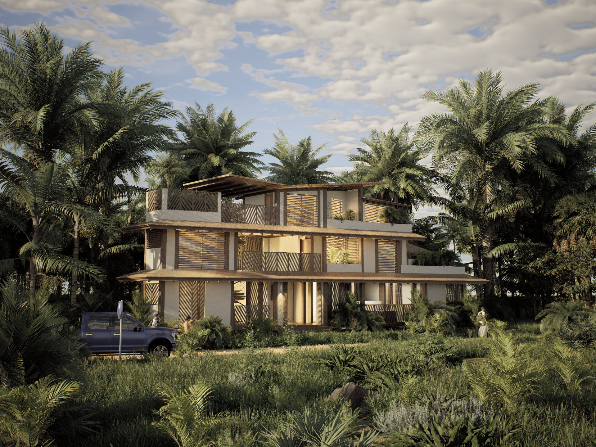
Le projet imagine un lieu d’hébergement temporaire pour des voyageurs aux rythmes variés : surfeurs, backpackers, digital nomads, couples et groupes d’amis. Plus qu’un simple endroit où dormir, l’hostel accompagne l’arrivée, le repos, le travail, les repas, la préparation d’une session de surf et les rencontres.
L’implantation tropicale impose de penser simultanément l’usage, le confort climatique et la relation au paysage.
Les espaces communs doivent provoquer les échanges, tandis que les chambres, le dortoir et certains lieux de repos protègent les moments de retrait. Le projet évite ainsi deux extrêmes : un bâtiment trop fermé, qui limite les rencontres, ou un lieu trop ouvert, qui supprime toute intimité.
Comment créer un lieu vivant et collectif, tout en respectant les besoins de calme, d’intimité et de confort ?
Chaque fonction devient une « île » identifiable. Les volumes construits sont reliés par des passerelles, des patios, des terrasses et des seuils couverts. Cette fragmentation clarifie les usages tout en multipliant les situations de rencontre.
Inspiré par la réflexion de Jan Gehl sur la vie entre les bâtiments, le projet donne autant d’importance aux espaces intermédiaires qu’aux pièces elles-mêmes.
À Siargao, la chaleur, l’humidité et les pluies fréquentes rendent la frontière entre intérieur et extérieur plus souple. Les coursives, terrasses et circulations protégées deviennent des lieux habités : on s’y croise, on y attend la pluie, on y revient après le surf ou on s’y arrête quelques minutes face à la végétation.
Le bâtiment n’est pas conçu comme un volume unique, mais comme une succession de lieux complémentaires. Les vides organisent autant le projet que les pleins.
Cette composition permet de passer progressivement du collectif à l’intime. Un usager peut participer à la vie de l’hostel, ralentir dans un seuil, puis rejoindre un espace plus calme sans rupture brutale.
Des modules distincts accueillent les différentes fonctions et donnent à chaque usage une identité claire.
Passerelles, coursives, patios et terrasses deviennent des lieux de respiration, de déplacement et de rencontre.
La végétation pénètre entre les volumes, cadre les vues et accompagne chaque transition du parcours.
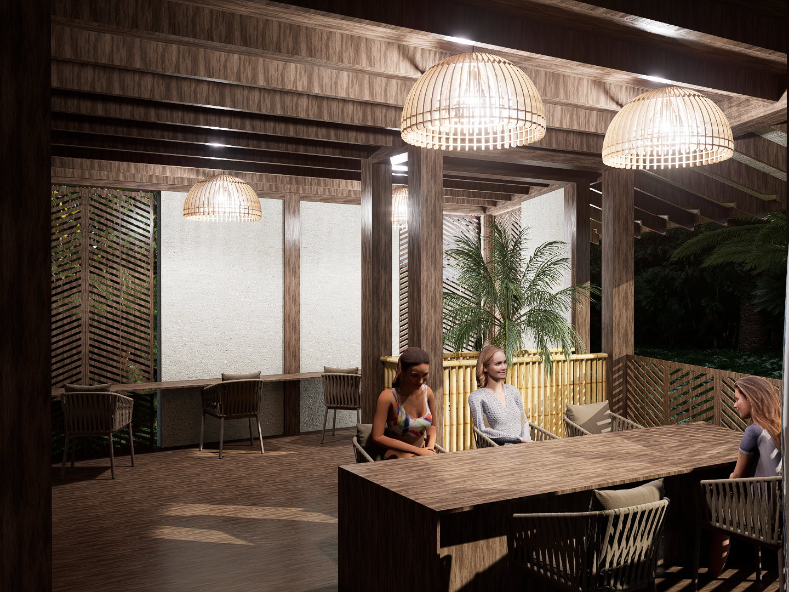
Le comptoir central et la grande table transforment l’accueil en lieu de vie. Le bois, le bambou et les fibres tressées installent une atmosphère chaleureuse, tandis que les ouvertures maintiennent un contact direct avec le climat et le jardin.
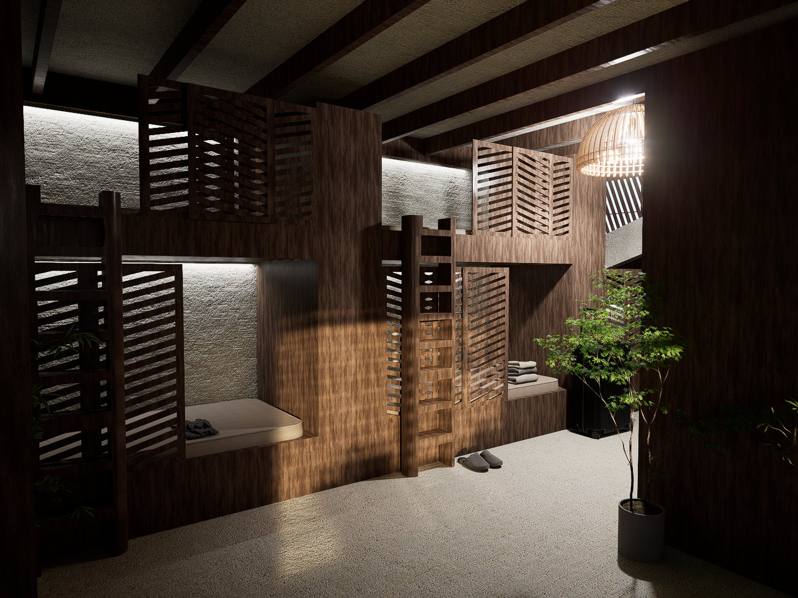
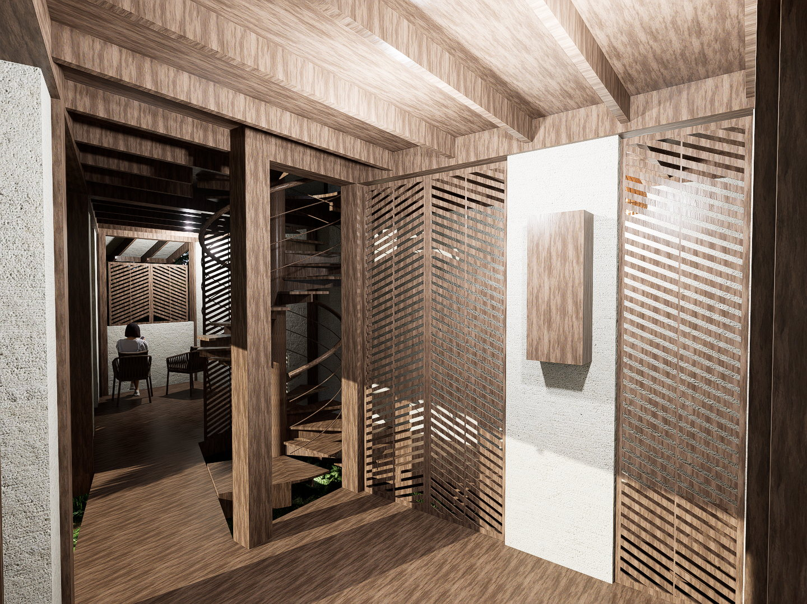
Architecture climatique
Le projet ne cherche pas à isoler totalement les usagers du climat tropical. Il compose avec lui grâce à une architecture poreuse et protégée.
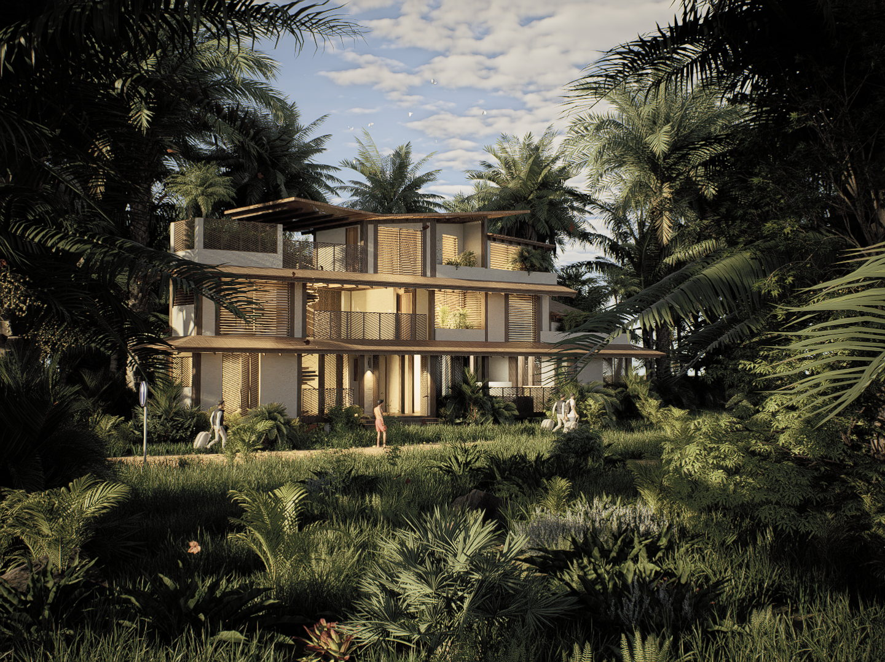
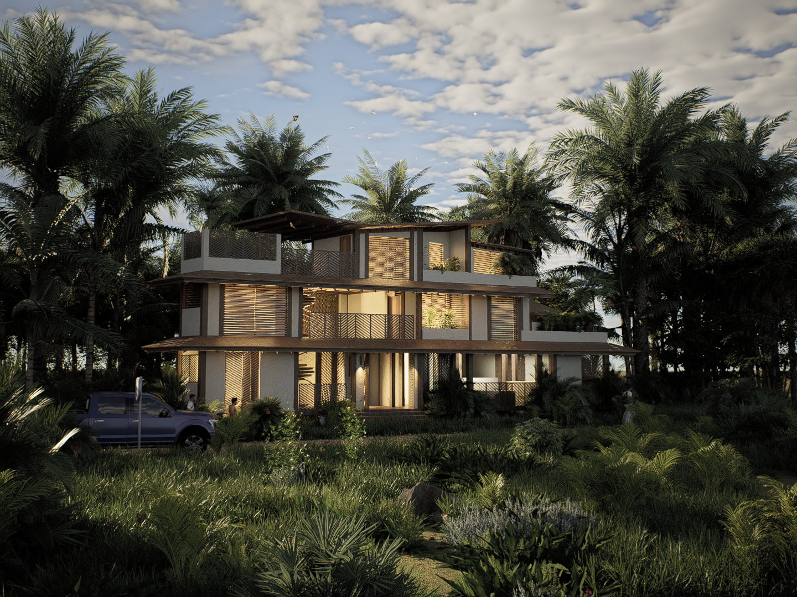
Le travail technique traduit la fragmentation du concept dans une organisation précise des niveaux, des circulations et des relations entre les modules.
Les plans conservent la forme contrainte de la parcelle et utilisent les vides pour structurer les usages, faire entrer la végétation et créer des parcours protégés.
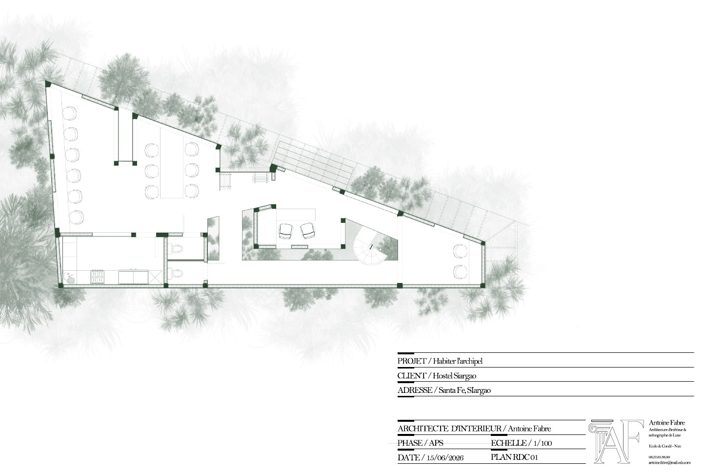
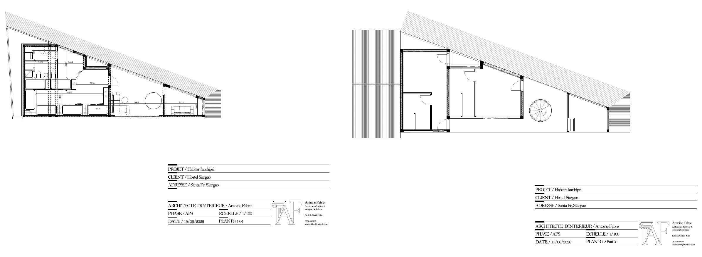
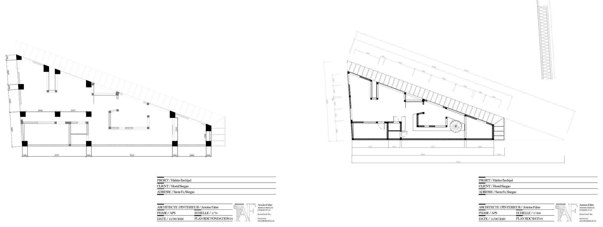
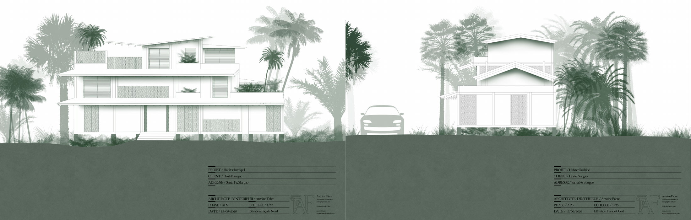
Planche de synthèse
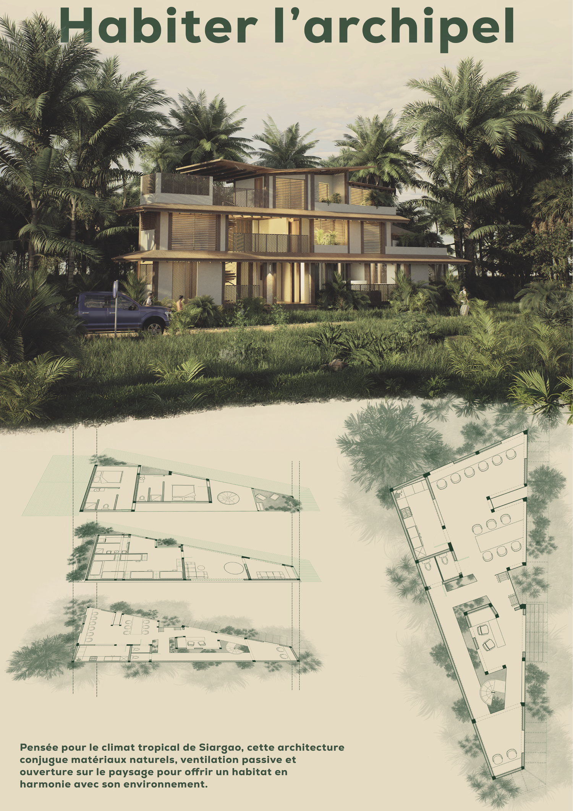
Cette galerie est prête à recevoir les photographies de la maquette : volumétrie générale, articulation des modules et relation au paysage.


Remplacez simplement ce fichier par votre future visite vidéo, sans modifier la page.
Le lecteur est déjà configuré pour le site. Il suffit de remplacer le fichier MP4 en conservant le même nom.
videos/habiter-archipel-immersive.mp4